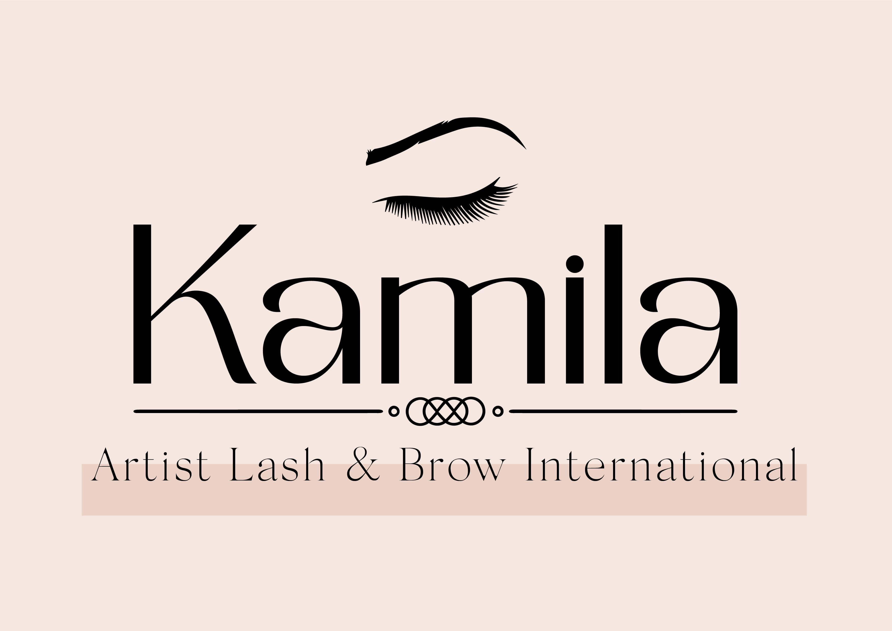

ESTILO VISUAL LASHISTA
Es un testimonio de sofisticación y elegancia, diseñado para realzar la belleza natural de tus ojos y prolongar su impacto en cada mirada.
A medida que el tiempo avanza, hemos tenido la oportunidad de participar en proyectos excepcionales que han dejado una huella significativa en nuestra trayectoria, permitiéndonos evolucionar, crecer y seguir ofreciendo soluciones de diseño innovadoras y exitosas.
Es un testimonio de sofisticación y elegancia, diseñado para realzar la belleza natural de tus ojos y prolongar su impacto en cada mirada.
Es una expresión de creatividad y elegancia que generamos para esta empresa, con una resolucion minuciosa
Fusiona la pasión por la buena comida con la excelencia en el diseño. Desde el logotipo hasta la presentación de los platos, ha sido cuidadosamente elaborado para ofrecer una experiencia auténtica.